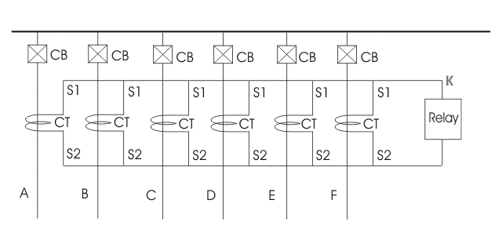
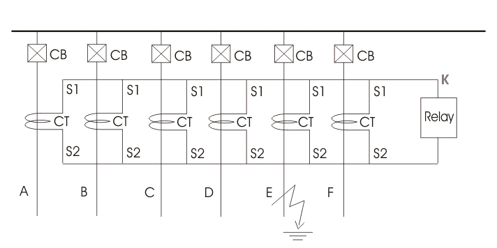
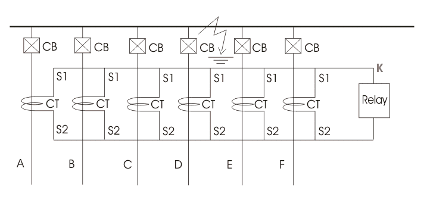
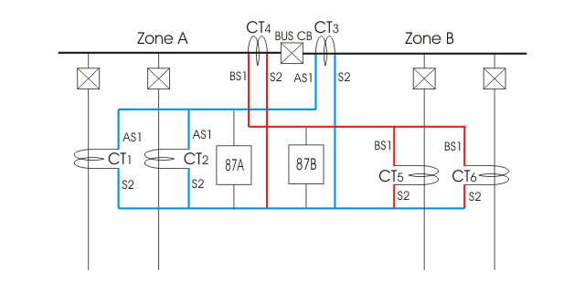
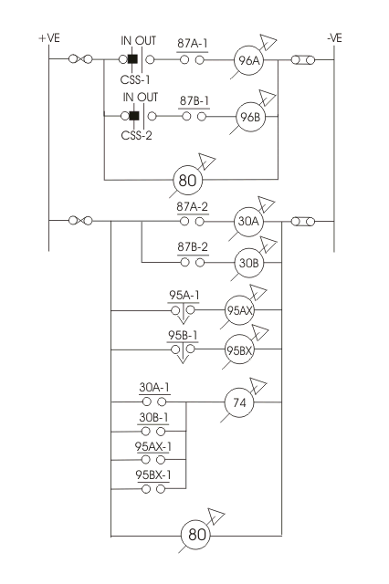
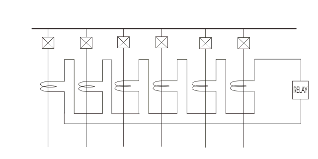

Current Differential Protection
Differential Protection of Sectionalized Bus
DC Circuit of Differential Busbar Protection
Voltage Differential Protection of Busbar
In early days only conventional over electric current relays were used for busbar protection. But it is desired that fault in any feeder or transformer connected to the busbar should not disturb busbar system. In viewing of this time setting of busbar protection relays are made lengthy. So when faults occurs on busbar itself, it takes much time to isolate the bus from source which may came much damage in the bus system.
In recent days, the second zone distance protection relays on incoming feeder, with operating time of 0.3 to 0.5 seconds have been applied for busbar protection.
But this scheme has also a main disadvantage. This scheme of protection can not discriminate the faulty section of the busbar.
Now days, electrical power system deals with huge amount of power. Hence any interruption in total bus system causes big loss to the company. So it becomes essential to isolate only faulty section of busbar during bus fault.
Another drawback of second zone distance protection scheme is that, sometime the clearing time is not short enough to ensure the system stability.
To overcome the above mentioned difficulties, differential busbar protection scheme with an operating time less than 0.1 sec., is commonly applied to many SHT bus systems.
Differential Busbar Protection
Current Differential Protection
The scheme of busbar protection, involves, Kirchoff’s electric current law, which states that, total electric current entering an electrical node is exactly equal to total electric current leaving the node.
Hence, total electric current entering into a bus section is equal to total electric current leaving the bus section.
The principle of differential busbar protection is very simple. Here, secondaries of CTs are connected parallel. That means, S1 terminals of all CTs connected together and forms a bus wire. Similarly S2 terminals of all CTs connected together to form another bus wire.
A tripping relay is connected across these two bus wires.

Here, in the figure above we assume that at normal condition feed, A, B, C, D, E & F carries electric current IA, IB, IC, ID, IE and IF.
Now, according to Kirchoff’s electric current law,
Essentially all the CTs used for differential busbar protection are of same electric current ratio. Hence, the summation of all secondary currents must also be equal to zero.
Now, say electric current through the relay connected in parallel with all CT secondaries, is iR, and iA, iB, iC, iD, iE and iF are secondary currents.
Now, let us apply KCL at node X. As per KCL at node X,
So, it is clear that under normal condition there is no electric current flows through the busbar protection tripping relay. This relay is generally referred as Relay 87. Now, say fault is occurred at any of the feeders, outside the protected zone. In that case, the faulty electric current will pass through primary of the CT of that feeder. This fault electric current is contributed by all other feeders connected to the bus. So, contributed part of fault electric current flows through the corresponding CT of respective feeder. Hence at that faulty condition, if we apply KCL at node K, we will still get, iR = 0.

That means, at external faulty condition, there is no electric current flows through relay 87. Now consider a situation when fault is occurred on the bus itself.
At this condition, also the faulty electric current is contributed by all feeders connected to the bus. Hence, at this condition, sum of all contributed fault electric current is equal to total faulty current.
Now, at faulty path there is no CT. (in external fault, both fault electric current and contributed electric current to the fault by different feeder get CT in their path of flowing).

The sum of all secondary currents is no longer zero. It is equal to secondary equivalent of faulty current.
Now, if we apply KCL at the nodes, we will get a non zero value of iR.
So at this condition electric current starts flowing through 87 relay and it makes trip the circuit breaker corresponding to all the feeders connected to this section of the busbar.
As all the incoming and outgoing feeders, connected to this section of bus are tripped, the bus becomes dead.
This differential busbar protection scheme is also referred as electric current differential protection of busbar.
Differential Protection of Sectionalized Bus
During explaining working principle of electric current differential protection of busbar, we have shown a simple non sectionalized busbar. But in moderate high voltage system electrical bus sectionalized in than one sections to increase stability of the system. It is done because, fault in one section of bus should not disturb other section of the system. Hence during bus fault, total bus would be interrupted.
Let us draw and discuss about protection of busbar with two sections.

Here, bus section A or zone A is bounded by CT1, CT2 and CT3 where CT1 and CT2 are feeder CTs and CT3 is bus CT.
Similarly bus section B or zone B is bounded by CT4, CT5 and CT6 where CT4 is bus CT, CT5 and CT6 are feeder CT.
Therefore, zone A and B are overlapped to ensure that, there is no zone left behind this busbar protection scheme.
ASI terminals of CT1, 2 and 3 are connected together to form secondary bus ASI
BSI terminals of CT4, 5 and 6 are connected together to form secondary bus BSI.
S2 terminals of all CTs are connected together to form a common bus S2.
Now, busbar protection relay 87A for zone A is connected across bus ASI and S2.
Relay 87B for zone B is connected across bus BSI and S2.
This section busbar differential protection scheme operates in some manner simple electric current differential protection of busbar.
That is, any fault in zone A, with trip only CB1, CB2 and bus CB.
Any fault in zone B, will trip only CB5, CB6 and bus CB.
Hence, fault in any section of bus will isolate only that portion from live system.
In electric current differential protection of busbar, if CT secondary circuits, or bus wires is open the relay may be operated to isolate the bus from live system. But this is not desirable.
DC Circuit of Differential Busbar Protection
A typical DC circuit for busbar differential protection scheme is given below.

Here, CSSA and CSSB are two selector switch which are used to put into service, the busbar protection system for zone A and zone B respectively.
If CSSA is in “IN” position, protection scheme for zone A is in service.
If CSSB is in “IN” position, protection for zone B is in service.
Generally both of the switches are in “IN’ position in normal operating condition. Here, relay coil of 96A and 96B are in series with differential busbar protection relay contact 87A-1 and 87B-1 respectively.
96A relay is multi contacts relay. Each circuit breaker in zone A is connected with individual contact of 96A.
Similarly, 96B is multi contacts relay and each circuit breaker in zone-B is connected with individual contacts of 96B.
Although here we use only one tripping relay per protected zone, but this is better to use one individual tripping relay per feeder. In this scheme one protective relay is provided per feeder circuit breaker, whereas two tripping relays one for zone A and other for zone B are provided to bus section or bus coupler circuit breaker.
On an interval fault in zone A or bus section A, the respective bus protection relay 87A, be energized whereas during internal fault in zone B, the respective relay 87B will be energized.
As soon as relay coil of 87A or 87B is energized respective no. contact 87A-1 or 87B-1 is closed.Hence, the tripping relay 96 will trip the breakers connected to the faulty zone. To indicate whether zone A or B busbar protection operated, relay 30 is used.
For example, if relay 87A is operated, corresponding “No” contact 87A-2 is closed which energized relay 30A. Then the No contact 30A-1 of relay 30A is closed to energized alarm relay 74. Supervision relay 95 of respective zone is also energized during internal fault, but it has a time delay of 3 second. So, it reset as soon as the fault is cleared and therefore does not pick up zone bus wire shorting relay 95x which in turn shorts out the bus wires. An alarm contact is also given to this auxiliary 95x relay to indicate which CT is open circuited. No volt relay 80 is provided in both trip and non-trip section of the D. C. circuit of differential busbar protection system to indicate any discontinuity of D. C. supply.
Voltage Differential Protection of Busbar
The electric current differential scheme is sensitive only when the CTs do not get saturated and maintain same electric current ratio, phase angle error under maximum faulty condition. This is usually not 80, particularly, in the case of an external fault on one of the feeders. The CT on the faulty feeder may be saturated by total electric current and consequently it will have very large errors. Due to this large error, the summation of secondary electric current of all CTs in a particular zone may not be zero. So there may be a high chance of tripping of all circuit breakers associated with this protection zone even in the case of an external large fault. To prevent this maloperation of electric current differential busbar protection, the 87 relays are provided with high pick up electric current and enough time delay.
The greatest troublesome cause of current transformer saturation is the transient dc component of the short circuit current.
This difficulties can be overcome by using air core CTs. This current transformer is also called linear coupler. As the core of the CT does not use iron the secondary characteristic of these CTs, is straight line.
In voltage differential busbar protection the CTs of all incoming and outgoing feeders are connected in series instead of connecting them in parallel.

The secondaries of all CTs and differential relay form a closed loop. If polarity of all CTs are properly matched, the sum of voltage across all CT secondaries is zero. Hence there would be no resultant voltage appears across the differential relay. When a buss fault occurs, sum of the all CT secondary voltage is no longer zero. Hence, there would be electric current circulate in the loop due to the resultant voltage. As this loop electric current also flows through the differential relay, the relay is operated to trip all the circuit beaker associated with protected bus zone. Except when ground fault electric current is severally limited by neutral impedance there is usually no selectivity problem When such a problem exists, it is solved by use of an additional more sensitive relaying equipment including a supervising protective relay.
 by
by